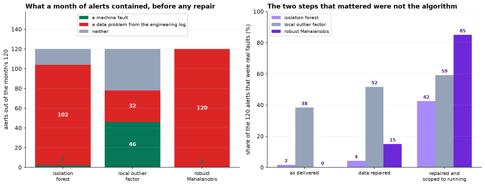

There are no labels. Nobody wrote down when the line was misbehaving, which is why they are asking for a detector in the first place, and it means there is no ROC curve to draw, no threshold to tune, and no way to score one method against another on accuracy.
- Setting
- Thirty days of five-minute telemetry from one bottling line: twelve sensors covering fill, capping, speed, motor condition, air supply, ambient conditions and downstream rejects. 8,640 readings after cleaning.
- The question
- Which readings should be sent to a maintenance technician? Maintenance wants to hear that the line is going wrong before the quality team finds out downstream.
- Why it matters
- One technician can investigate about four alerts a day, and will stop reading them entirely if most turn out to be nothing. There is no second chance: a system that cries wolf for a fortnight gets switched off and does not come back.
- What we do
- Show why a limit check cannot work here, run three detectors on the export as delivered, find out what the alerts actually are, repair the data using the engineering log, define what normal operation means, set the threshold against capacity rather than statistics, and measure sensitivity by injecting faults rather than by using labels.
An isolation forest given a month of the technician's capacity returned two machine faults and a hundred and two data problems, ninety of them a single firmware update. Repairing three columns and excluding one operating mode moved precision from under 2 percent to 85. No choice among the three algorithms came close to that.
Why a Limit Check Cannot Work Here
The obvious first system is a limit on each sensor: alert when anything moves more than three standard deviations from its mean.
![Four panels. Top left: box plots of the twelve sensors in standard deviations from each sensor's own mean, with dashed lines at plus and minus three; the boxes are tight but several sensors show long tails past the lines. Top right: a scatter of conveyor current against motor vibration with a dashed box at plus and minus three on each axis; the bulk sits on a tight diagonal and 111 marked points sit off it while remaining inside the box. Bottom left: a twelve by twelve correlation heat map with one warm block covering line speed, motor temperature, motor vibration and conveyor current. Bottom right: readings beyond three standard deviations per day by sensor, led by air pressure at 19.2 and motor temperature at 8.0, against a dashed line at the four-alert daily budget.](../assets/img/capstone-anomaly-firstlook.png)
The reason is in the brief. A worn bearing raises vibration and motor temperature and current together, each by an amount that is unremarkable on its own. Nothing goes out of range. A filler valve drifts while the control loop compensates, so fill volume rises as valve position falls and both stay inside their limits. The information is entirely in the combination, which is what a multivariate detector is for.
A Month of Alerts, on the Export As Delivered
Three standard methods with three different ideas about what "unusual" means. Isolation forest scores a point by how few random splits isolate it. Local outlier factor compares a point's local density with its neighbours', so it is relative. Robust Mahalanobis distance fits a contamination-resistant covariance and measures distance in units of it, which is the one that directly notices when correlated sensors stop agreeing.
Give each of them exactly 120 alerts, which is the technician's month.
| Detector | Machine faults | Data problems | Neither |
|---|---|---|---|
| Isolation forest | 2 | 102 | 16 |
| Local outlier factor | 46 | 32 | 49 |
| Robust Mahalanobis | 0 | 120 | 0 |
Two machine faults and a hundred and two data problems. Ninety of the isolation forest's alerts are the air pressure transmitter reporting in psi after its firmware update, so the technician spends the month confirming, ninety separate times, that a firmware update happened on day 12. The robust Mahalanobis distance does worse still: zero faults out of 120.
The 576 psi readings are a long way from the bulk of the data, so a global method sees 576 extreme points. LOF asks a local question, and each psi reading sits in a perfectly ordinary neighbourhood of 575 other psi readings. It is not that LOF is smarter. It is asking a different question, and on this particular defect the different question happens to be the better one.

The Detectors Do Not Agree With Each Other
| Pair | Alerts in common, out of 120 |
|---|---|
| Isolation forest and local outlier factor | 10 |
| Isolation forest and robust Mahalanobis | 45 |
| Local outlier factor and robust Mahalanobis | 4 |
| Flagged by all three | 4 |
Three well-regarded detectors, the same data, the same budget, agreeing on four readings out of a hundred and twenty.
With labels this would be easy to adjudicate. Without them there is no basis for preferring one list to another, which is uncomfortable and is the honest position. It also suggests a use for the disagreement: if they overlap this little, the readings all of them dislike are unusual in more than one sense, and section 6 comes back to that.
Repair the Data, Then Define Normal
The engineering log lists four things that happened to the plant during the window and none of them were faults. Every one is visible in the data.
| Log entry | What it looks like in the file | The repair |
|---|---|---|
| Day 7, clock resync | 96 readings written twice | Deduplicate on day and time |
| Day 12, firmware update | 576 readings above 20 in a column whose unit is bar; median 90.8 against 6.20, a factor of 14.63 | 1 bar = 14.5038 psi. Convert |
| Day 19, sensor not updating | 79 readings where vibration is identical for six consecutive samples | Drop: a stuck sensor carries no information |
| Day 24, labeler recalibrated | Median tension 11.75 N before, 14.09 N after | Re-level: a recalibration changes the scale, not the machine |
Refit the isolation forest on the repaired data and it finds five faults instead of two. Then look at what it is flagging instead.
The detector is not wrong. A stopped line genuinely is unusual: speed near zero, the motor cooling toward ambient, vibration down to a background hum. It is a completely different operating mode from a line running at 448 bottles a minute, and it is not a fault, and nobody needs to be told about it.
An anomaly detector answers "is this unlike the rest of the data". The question that was wanted is "is this unlike normal operation". Those coincide only if the dataset contains nothing but normal operation. Saying what normal means is a modeling decision, and it has to be made by somebody who knows the plant.
| Detector | Faults in the top 120 | Precision | Lift over the 12% base rate |
|---|---|---|---|
| Isolation forest | 51 | 42.5% | 3.5× |
| Local outlier factor | 71 | 59.2% | 4.9× |
| Robust Mahalanobis | 102 | 85.0% | 7.1× |
Data repaired and restricted to the 7,529 readings with the line running, of which 907 are during a fault.
From two useful alerts in a month to a hundred and two. The ordering of the three has also reversed: the robust Mahalanobis distance was the worst on the raw export and is by a distance the best here. That is not luck. The faults in this dataset are correlated sensors ceasing to agree, and a Mahalanobis distance measures exactly that. Once the two things breaking the covariance estimate are gone, it has the right tool for the job.
Setting a Threshold With Nothing to Tune Against
There is no validation set, so the threshold cannot be optimized. It can be chosen, and the thing to choose it against is the technician's capacity. First the metric has to change: maintenance does not care about individual five-minute readings, it cares about being told once that an episode is under way. There are 23 distinct fault episodes in the running data.
| Budget | Alerts per day | Precision | Episodes caught |
|---|---|---|---|
| Top 30 | 1.0 | 100.0% | 16 of 23 |
| Top 60 | 2.0 | 91.7% | 19 of 23 |
| Top 120 | 4.0 | 85.0% | 20 of 23 |
| Top 240 | 8.0 | 77.5% | 23 of 23 |
| Top 480 | 16.0 | 59.0% | 23 of 23 |
That table is the conversation to have with the maintenance manager, and it requires nobody to understand the algorithm. One alert a day is right every time and misses seven episodes in a month. Eight a day catches all twenty-three and is wrong nearly a quarter of the time. Four a day, which is what they said they could handle, gets twenty of twenty-three at 85 percent.
The threshold is an operations decision presented as a table, not a statistical one presented as a number.
![Left: two curves against alerts per day. The share of alerts that are real falls from 100 percent at one a day to 59 percent at sixteen a day; the share of fault episodes caught rises from 70 percent to 100 percent by eight a day. A dotted line marks the technician's capacity of four a day, where the curves cross at about 85 percent. Right: the robust Mahalanobis score on a log scale against day of the window, with normal running in gray and the three fault types in color, and a dashed horizontal line at the four-alerts-a-day threshold. The fault episodes appear as vertical stripes of colored points, many of them above the line.](../assets/img/capstone-anomaly-budget.png)
Using the Disagreement
Section 3 found the three detectors overlapping on four alerts out of 120. Rather than picking a winner with no evidence, require agreement.
| Policy | Alerts | Per day | Precision | Episodes caught |
|---|---|---|---|---|
| Any one of the three | 238 | 7.9 | 55.0% | 22 of 23 |
| At least two of the three | 90 | 3.0 | 72.2% | 22 of 23 |
| All three agree | 32 | 1.1 | 87.5% | 15 of 23 |
Two of three is the policy to ship. Ninety alerts over the month, three a day, comfortably inside the budget, 72 percent of them real, and it catches twenty-two of the twenty-three episodes. Requiring all three to agree is more accurate per alert and misses a third of the episodes, because the detectors are looking for different things and only the most blatant faults look wrong in all three ways at once.
It is also worth knowing which failure mode the system is weak on before it is switched on. At four alerts a day the best single detector catches 9 of 9 bearing-wear episodes and 8 of 8 valve drifts, and only 3 of 6 air leaks.
Measuring Sensitivity With No Labels At All
Every score so far used the answer key. In practice there is not one, and the question "how bad does a fault have to get before this notices" still needs an answer.
Injection answers it. Take the clean data, add a fault of known size and shape, and see whether the detector catches it. This uses no labels, it runs against production data, and it is the only sensitivity figure actually available.
That is a real answer to "how much warning can we expect", obtained without a single labeled fault. Run it monthly against live data and it doubles as a drift check: if the injected-fault detection rate falls, something about the line or the sensors has changed and the detector needs refitting.
What to Watch
- ✓Read the engineering log before the data. Every alert in the first month traced to something somebody already knew about, and it was written down.
- ✓Expect the first run to find your data problems. That is not a failed project, it is the first useful output, and it should be handed to whoever owns the historian.
- ✓Define normal operation explicitly. A stopped line is genuinely anomalous and genuinely uninteresting, and no algorithm can tell the difference for you.
- ✓Do not expect detectors to agree. Ten alerts in common out of 120, and with no labels there is no basis for preferring one list. Use the agreement instead.
- ✓Score episodes, not readings. Nobody wants to be told forty times about the same drifting valve.
- ✓Set the threshold from capacity and present it as a table. It has no statistical justification and does not need one.
- ✓Inject known faults to measure sensitivity, then keep doing it on a schedule as a drift monitor.
- ✓Write the false alarms back into the log. When an alert turns out to be a data problem, record it, so the next model does not have to rediscover it.
Unlabeled Detection in Data Science & AI
| Where it appears | The same problem, in a different costume |
|---|---|
| Predictive maintenance | This chapter. The alert budget is a technician's day and the false alarms are the reason systems get turned off |
| Security monitoring | Intrusion detection, where the first month of alerts is a misconfigured backup job and alert fatigue is a documented cause of missed breaches |
| Data quality and observability | The same detectors pointed deliberately at the thing this chapter treated as a nuisance: schema drift, unit changes, stuck feeds |
| Model monitoring in production | Detecting that the input distribution has moved, where there are no labels for months and the injection idea reappears as a canary |
| Clinical and financial surveillance | Rare-event flagging where the review capacity is fixed and the cost of a false alarm is somebody's attention |
Liu, Ting and Zhou introduced the isolation forest in 2008 and Breunig and colleagues the local outlier factor in 2000; the contrast between global and local notions of outlyingness in section 2 is exactly the distinction those two papers are built on. Rousseeuw and Van Driessen's fast minimum covariance determinant algorithm, from 1999, is what makes the robust Mahalanobis distance practical at this scale. Campos and colleagues benchmarked the whole field in 2016 and found that preprocessing and parameter choices moved results more than the choice of algorithm, which is the result section 4 reproduces. On the operational side, Chandola, Banerjee and Kumar's 2009 survey remains the standard map of the problem space, and the alert-fatigue literature in clinical monitoring, where Cvach's 2012 review is a common entry point, is the best-documented evidence that a system nobody reads is worse than no system.
The full project, step by step
The companion notebook removes the clock-resync duplicates, shows what a limit check achieves, runs all three detectors on the export as delivered and reports what the alerts really are, measures how little the detectors agree, repairs each entry in the engineering log, discovers that the remaining alerts are all the line being stopped, refits on running operation only, builds the alert-budget table, tests the consensus policies, and measures sensitivity by injecting synthetic faults.
The dataset
(capstone-anomaly-detection-unlabeled.xlsx) holds 8,736 five-minute readings across twelve
sensors, with a clock resync that duplicated 96 rows, a two-day unit change, a stuck sensor, a calibration
step, twenty-four fault episodes that stay inside every individual limit, and a sealed answer key. Two
written reports accompany it: a plain-language brief for the maintenance manager, and a
technical report covering the detectors, the repairs and the threshold.
🎓 Key Takeaways
- ✓A limit check found 7 percent of fault readings at seven times the alert budget, because the faults are only visible in the combination.
- ✓The first month of alerts was 2 faults and 102 data problems, ninety of them one firmware update.
- ✓Three detectors agreed on 4 alerts out of 120. With no labels there is no basis for picking a winner, so use the agreement.
- ✓Cleaning and scoping moved precision from under 2 percent to 85. No algorithm choice came close.
- ✓Two of three detectors agreeing gives 3 alerts a day at 72 percent precision and catches 22 of 23 episodes.